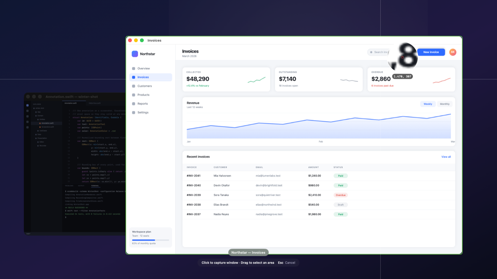
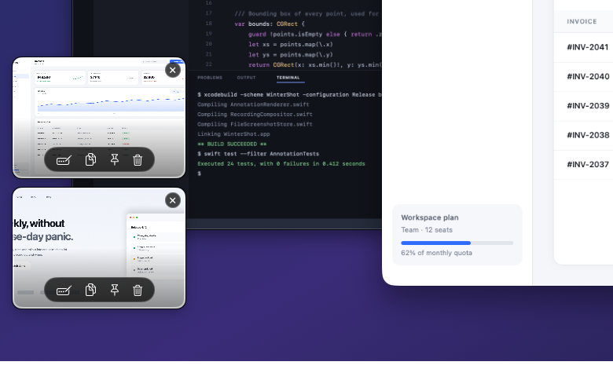
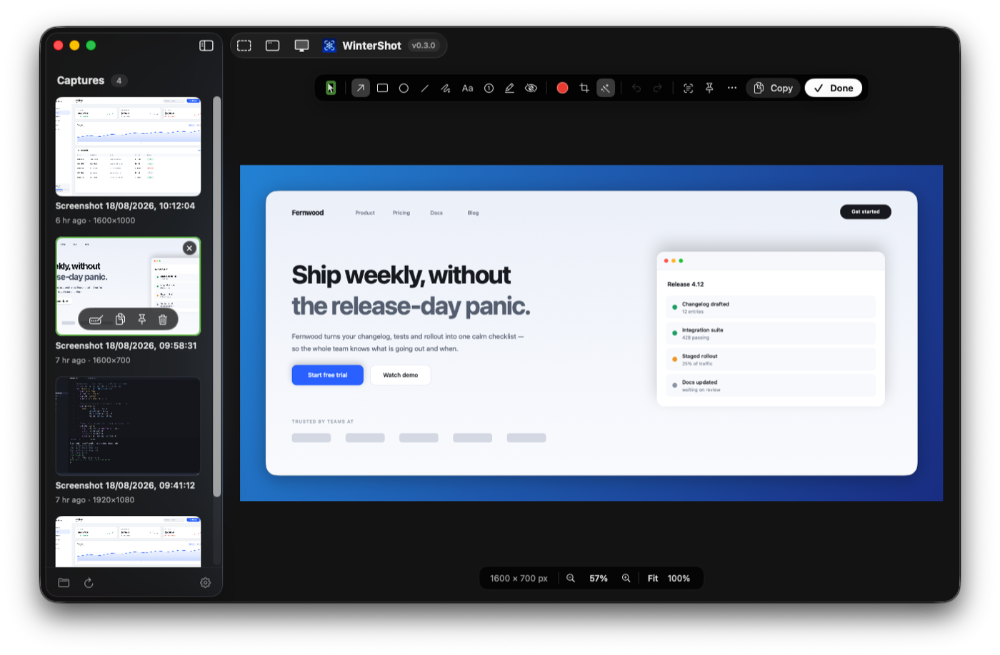
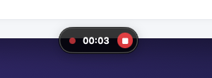
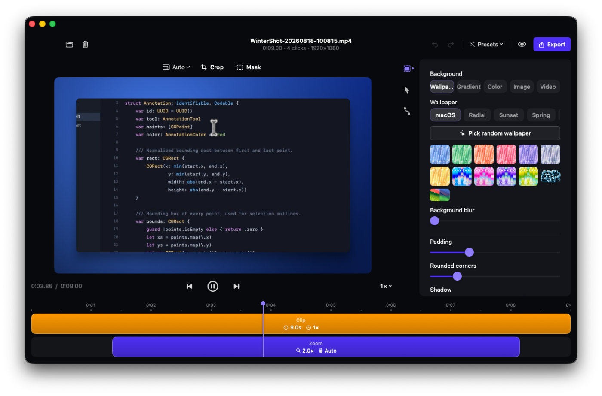
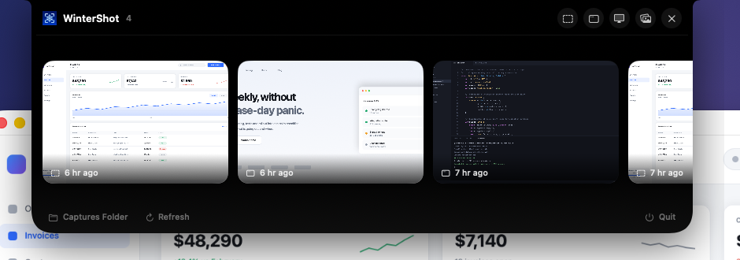

The capture flow
Press the hotkey. The screen freezes.
No countdowns, no moving targets. The moment you press ⌘⇧4, WinterShot freezes the whole screen so you can aim in peace.
Windows lift out. Pixels magnify.
Hover a window and it lifts out of the dimmed backdrop — one click captures it cleanly, even when it's half-covered. Or drag anywhere for an area while the pixel loupe magnifies the cursor with live coordinates.


Every capture slides in as a card.
Annotate, copy, pin or delete it right from the thumbnail — or click through to the full editor. New captures stack upward, so a burst of screenshots never buries the last one.
The editor
Annotations that never flatten.
Arrows, counters, redaction — everything you draw lives in a tiny sidecar file next to the PNG, not in the pixels. Reopen a shot from three months ago and every arrow still moves, every crop still reverses. Exports flatten a copy, never the original.

Flip on a backdrop and the same capture is post-ready — seven gradient presets, padding, corners, shadow. On-device OCR pulls the text out too.
Screen recording
Record once. Re-export forever.
WinterShot keeps the real pointer out of the pixels and logs every click beside the video. Stop recording, and a Screen Studio-style editor opens — zoom, cursor, backdrop and masks are applied at export, so the raw take is never touched.


Auto-zoom camera
The camera glides to wherever you clicked, holds while you work there, then eases back out. Adjustable depth.
Synthetic cursor
Smoothed, resizable, with click ripples — mirroring the exact pointer macOS was showing, sharp at any zoom.
Backdrops
Wallpaper, gradient, solid, your own image or a looping video — with blur, padding, corner radius and shadow.
Crop & masks
Non-destructive crop with aspect lock, plus timed regions that blur sensitive data or spotlight one area.
Every shape
16:9 for YouTube, 9:16 for Reels and TikTok, 1:1, 4:5 and more — the same take, exported for every channel.
Finishing touches
Cinematic motion blur, background music with volume control, presets, undo/redo and a scrubable timeline.
Everything composites on the GPU — the live preview is the 60 fps MP4 you export.

History
Your captures, one click away.
A notch panel drops from the top of the screen with your latest captures; the main window keeps the full library beside the editor. Reopen, copy, pin to the screen, or delete — from either.
“WinterShot” would like to record this computer's screen.
Grant access in System Settings → Privacy & Security → Screen Recording.
↑ the only dialog you'll ever see
Privacy, by design
One permission. Nothing leaves your Mac.
- Screen Recording — and that's it. No microphone, no accessibility, no input monitoring, no account.
- Everything runs on-device. Captures, recordings, annotations and OCR never touch a server. The only network call is the update check against GitHub releases.
- Your files stay yours. Plain PNGs and MP4s next to readable JSON sidecars. Delete the app and your captures are still ordinary files.
How it compares
The free one, without the asterisk.
The only tool here that's free, open source, and pairs a non-destructive screenshot editor with a Screen Studio-style recording editor.
| WinterShot | CleanShot X | Shottr | Screen Studio | macOS ⌘⇧4 | |
|---|---|---|---|---|---|
| Price | Free | $29+ | Freemium | $89+ | Free |
| Open source | ✓ MIT | ✗ | ✗ | ✗ | ✗ |
| Freeze-frame selector + loupe | ✓ | ✓ | ✓ | — | ✗ |
| Re-editable annotations | ✓ | ✗ | ✗ | — | ✗ |
| Background beautify | ✓ | ✓ | ✓ | ✓ | ✗ |
| On-device OCR | ✓ | ✓ | ✓ | — | ✗ |
| Screen recording | ✓ | ✓ | ✗ | ✓ | ✓ |
| Studio editor — click-to-zoom | ✓ | ✗ | ✗ | ✓ | ✗ |
| Re-export a take with a new look | ✓ | ✗ | ✗ | ✓ | ✗ |
| 100% on-device, no account | ✓ | ✓ | ✓ | ✗ | ✓ |
| System permissions required | 1 | several | several | several | 0 |
Comparison reflects publicly documented features as of 2026 · competitors are trademarks of their owners · corrections welcome via PR.
FAQ
Questions, answered.
Is WinterShot really free?
Yes — free and open source under the MIT license. No subscription, no account, no trial limits, no "pro" tier.
How is this different from macOS's built-in ⌘⇧4?
The system tool takes the picture and stops there. WinterShot adds a frozen-screen selector with a pixel loupe and window lifting, an annotation editor whose edits stay editable forever, background beautify, OCR, pinning, a capture history — and screen recording with a full post-production editor.
macOS says the app "cannot be opened". What do I do?
The build isn't notarized yet. Right-click the app → Open → Open, or run xattr -cr /Applications/WinterShot.app once.
Can I edit a capture again later?
Yes — that's the point of the sidecar files. Reopen any capture from the history and every annotation is still selectable, the crop is still reversible, and the backdrop is still adjustable. Exports flatten a copy, never the original.
Does the recording editor change my original video?
Never. Zoom, cursor, backdrop, crop, masks and music are applied only when you export. Re-export the same take as many times as you want, in as many shapes as you want.
Where do my captures live?
In ~/Library/Application Support/WinterShot/Captures/ — an immutable PNG or MP4 plus a JSON sidecar holding your edits. Delete the app and they're still ordinary files.
Does it work on Intel Macs?
The published build is Apple Silicon only (M1 and later, macOS 14+). Intel users can build from source — see the development guide on GitHub.
Take your shot.
Free, MIT-licensed, and living quietly in your menu bar. If WinterShot saves you a round-trip, star it on GitHub so more people find it.
macOS 14+ · Apple Silicon · one permission · zero telemetry